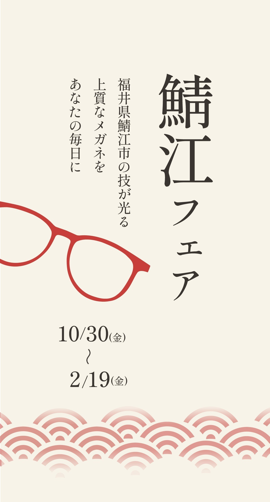
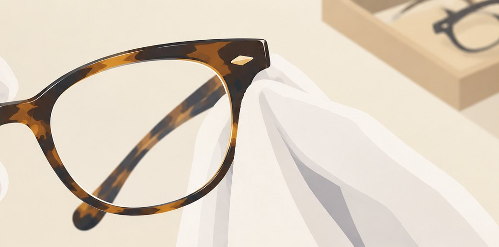
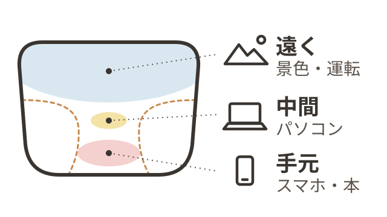

1
顔になじむ、掛け心地
200以上の工程を、専門の職人が分担。
精密なパーツが、ゆがみの少ない一本に。

200以上の工程を、専門の職人が分担。
精密なパーツが、ゆがみの少ない一本に。

2職人の手で、時間をかけて磨き上げる。
セルの色に、深みとツヤが生まれます。
1980年代、加工の難しいチタンを
世界で初めてフレームにしたのが鯖江。
軽く丈夫で、金属アレルギーにも安心。
アイメガネ各店に、鯖江のメガネを
約40ブランド取り揃えています。
そのほかの取り扱いブランド
※店舗によっては、お取り扱いのないブランド・商品があります。
ご来店前に、店舗へお問い合わせください。
福井県鯖江市で作られた上質なメガネが集まる、特別な時間です。
レンズ選びから、ご購入後まで。
安心してお任せください。
小さい文字が見にくくなった方へ
遠近両用も追加料金0円
※その他累進レンズも対象※「選べるレンズ付き」のセットが対象※標準レンズの場合

遠くも手元も、これ1本で
こんな方におすすめ
レンズ選びが不安な方へ
国家検定資格
手元が見えにくくて…
遠近両用ははじめてで不安
見え方をしっかり測って、
ぴったりのレンズを
ご提案します。
※不在の日もあるため、ご予約がおすすめです
長く使いたい方へ
視え方保証
6か月
度数交換が何度でも無料
品質保証
1年
不具合は無料で交換
アイ情補償
1年
うっかり破損50%引き
元気に遊んで壊しちゃっても大丈夫
3つの保証が、すべて1年間
視え方保証
度数交換が
何度でも無料
品質保証
不具合は
無料で交換
破損・紛失
1回目は無料、2回目・紛失は50%引き
手術後の見え方の変化にも安心
4つの保証が、すべて1年間
視え方保証
度数の変化に
何度でも対応
品質保証
不具合は
無料で交換
カラー変更
まぶしさに
合わせて色変更
半額補償
破損は
半額で購入
※手術を受けた方は、ご購入時にスタッフへお伝えください
※当社指定レンズが対象です
メガネの点検・クリーニングは
いつでも無料ですご家族のメガネや、
他店で買ったメガネもお気軽にどうぞ
※品質保証は、通常のお取り扱いで生じた損傷が
現在地、または郵便番号(上3桁)で
お近くの店舗を探せます
※WEB予約は、本日から3日後以降の日程でお取りいただけます。
お急ぎの場合はお電話にてお問い合わせください。
取扱商材
資格者在籍
設備
職人の魂が息づく
鯖江フェア
2026/10/30（金）〜2027/2/19（金）アイメガネ各店にて開催
※本庄南大通り店を除く
鯖江フェア10/30（金）〜2/19（金）
来店予約はこちら